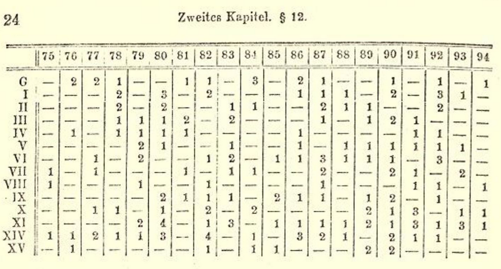

Death by Horsekick
demonstrating the poisson distribution with data from the prussian army
In 1880, four soldiers from the eleventh army corp died from being kicked in the head while most army corps had zero or one soldiers dying from horse kick. Two years later, the twelfth army corp had four soldiers died despite none dying the year before. Was something nefarious going on or did the eleventh army corp have supremely bad luck? Graphing the deaths per corp and per year, there doesn’t seem to be any pattern in which corp has the most deaths via horsekick.
Death by horsekick is an exceedingly rare event but with the number of soliders and horses in the prussian army it’s bound to happen from time to time. How can we tell if the number of deaths via horse kick are typical? The answers lies in the poisson distribution.
The poisson distribution can be used to characterize discrete, rare events over a specified time interval and is characterized by the following equation:
\[P(X=x) = \frac{\lambda^{x}e^{-\lambda}}{x!}\]
where \(\lambda =\) avg number of events per interval , \(k =\) number of time events occur, and \(e = \simeq 2.7128\) which is Euler’s number. Given that one soldier dying by horse kick is (hopefully) independent of another soldier dying, this data set matches the criteria for a poisson distribution.
Comparing the data to the model, we can see that the predicted deaths match the actual deaths very closely. Originally, this data set was used to demonstrate the effectivness of the Poisson Distribution as a model for discrete, random events.
Works Cited
- http://www.mun.ca/biology/scarr/smcPoisson_distributions.html
- https://books.google.com/books?id=dh24EaSrmBkC&pg=PA92&lpg=PA92&dq=prussian+horse+poisson&source=bl&ots=n9t9plYWJq&sig=ACfU3U0Yy-D3if4ei9BW0yqfLAbbbl_WZA&hl=en&sa=X&ved=2ahUKEwiDo5Oy9pjqAhWIq54KHRm8DuY4ChDoATABegQICBAB